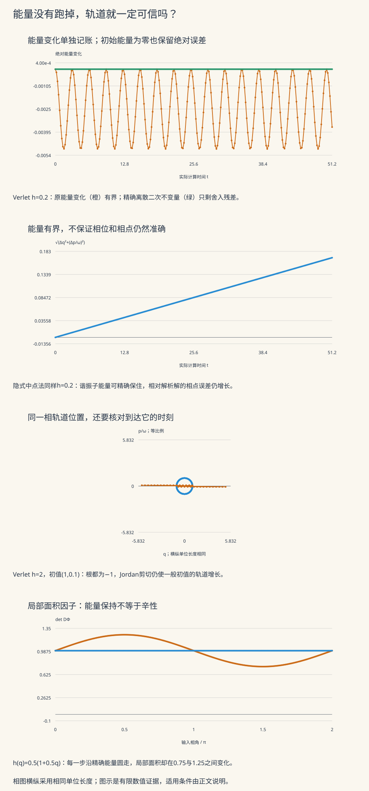

本页目录
计算物理 II · 动力系统与辛积分
一个振子始终停留在正确的能量圆上，却可能在错误的时刻到达圆上的位置。另一个算法保持相空间面积，轨道却不断增长。判断长期模拟是否可信，需要把能量、相位、稳定性和辛结构分别说清楚。本页从可手算的谐振子出发，再进入双阱势能和两个几何反例。前置：哈密顿力学、常微分方程稳定性。
学习层：一条好看的圆，能证明多少事情？
| 模型 | 可以改变什么 | 要分开的两件事 |
|---|---|---|
| 谐振子 | 方法、真实固定步长、步数、频率、初值 | 能量保持与相位准确 |
| 双阱 | 方法、步长、初值 | 物理鞍点的不稳定与数值放大 |
| 几何反例 | 状态依赖步长、四维伸缩 | 能量或体积保持与辛性 |
先作四个预测，再揭示每一步轨迹、阶段、回放和细化表。下面的 \(q,p,t,H\) 均已无量纲化，质量取1，因此 \(p=\dot q\)。这不是把有单位的动量随意换成速度；换回物理单位时要恢复选定的质量、长度和时间尺度。
无脚本参考：默认步长真的就是0.2
默认取谐振子 \(\omega=1\)、\(h=0.2\)、256步、\((q_0,p_0)=(1,0)\)。一次 Velocity Verlet 更新为
所以 \(H_1=0.499802\)，相对初值 \(H_0=0.5\) 的变化为 \(-0.000396\)。实验保持输入的步长不变，终时为 \(256\times0.2=51.2\)；不会为了凑成整数周期偷偷改成另一个步长。
| 量 | 默认模型的数值 |
|---|---|
| 一步q | 0.98 |
| 一步p | -0.198 |
| 一步H | 0.499802 |
| 一步相对能量变化 | -0.000396 |
| 一步离散二次不变量I | 0.495 |
| 一步实际面积因子 | 1 |
| 离散旋转频率 | 1.00167421162 |
| 256步实际终时 | 51.2 |
| 终点归一化相点误差 | 0.0833798167429 |
| 全程最大能量绝对变化 | 0.00499990844816 |
| 负h回放后相点残差 | 1.13636967036e-15 |
细化研究是另一个受控比较：谐振子固定终时 \(T=8.5\pi/\omega\)，双阱固定 \(T=8\)，取8、16、32、64、128、256、512步，实际步长为 \(T/N\)。表中明确列出两者，不能把“延长时间”和“细化同一个问题”混为一谈。

1 · 连续 Hamilton 流保留什么
对共轭坐标 \(z=(q,p)\) 和可分离 Hamilton 量
正则方程为
本页始终按 \((q,p)\) 排列变量；有些教材按 \((p,q)\) 排列，同时写 \(J^{-1}\nabla H\)。必须连同排序检查符号。
记流对初值的导数为 \(Y(t)=D\Phi_t(z_0)\)。它满足变分方程 \(\dot Y=JH''(\Phi_t)Y\)。因为 Hessian 对称，
这就是辛条件，表示二形式 \(\sum_i dq_i\wedge dp_i\) 被保持。把它取最高次外积，得到相空间体积保持，即 Liouville 性质。若 \(H\) 不显含时间，还有
这是一条额外的第一积分；它与辛性有关，但不能互相替代。数值映射 \(\Psi_h\) 是否辛，要检查 \(D\Psi_h^{\mathsf T}J D\Psi_h=J\)。相关推导见 Hairer 几何数值积分第2讲及 Gauckler–Hairer–Lubich 第2节。
2 · 从三次简单更新推导 Verlet
只沿动能 \(T(p)=p^2/2\) 演化时，动量不变，位置平移；只沿势能演化时，位置不变，动量平移：
它们的 Jacobian 为
两者都是辛映射，复合仍然辛。对称组合 \(\Psi_h=K_{h/2}\circ D_h\circ K_{h/2}\) 就是 Velocity Verlet：
实验实际执行这三个阶段，并在各自的真实输入点计算 \(V'\) 和 \(V''\)。整步 Jacobian 是三个局部矩阵按同样顺序相乘；它不是从一张近似轨迹图上量出来的面积。
由 \(K_{-h}=K_h^{-1}\)、\(D_{-h}=D_h^{-1}\) 及回文顺序，
因此同一方法换成负步长能够回走。有限精度下，回放残差还会受舍入以及动力学敏感性影响，不能一概要求恰为零。一般可逆矩阵当然都有逆，但“存在一个逆映射”不等于“把同一数值方法的 \(h\) 改为 \(-h\) 就是逆”。
对称性也解释二阶精度。准确说，形式上的 \(\log\Psi_h\) 只含 \(h,h^3,h^5,\ldots\)；除以 \(h\) 后的修正向量场只含 \(1,h^2,h^4,\ldots\)。局部误差为 \(O(h^3)\)，固定时间的全局误差为 \(O(h^2)\)。不要把“映射对数的奇次幂”说成“修正向量场的奇次幂”。
3 · 谐振子的矩阵把稳定边界暴露出来
取
令 \(z=\omega h\)，Verlet 的实际一步矩阵为
特征方程为 \(\lambda^2-2(1-z^2/2)\lambda+1=0\)。 当 \(0\lt z\lt2\) 时，两根为不同的单位模共轭根，\(M_V^n\) 对所有初值有界；当 \(z\gt2\) 时，一根绝对值大于1，一般轨道指数增长。两种情况中行列式都是1，所以辛性不能替代稳定性。
边界 \(z=2\) 要单独算。 此时
从而
即使两个根都为 \(-1\)，非平凡 Jordan 块仍会产生线性增长。默认方向 \(p_0=0\) 恰好使增长项消失，不能据此宣布边界稳定。实验提供 \(h=2,p_0=0.1\) 与同一步长 \(p_0=0\) 的对照。
判断临界位置时，程序保留读入的浮点参数的精确乘积符号，不会先把邻近的 \(\omega h\) 舍入成2，再把不同侧的状态合并。屏幕上的有限位小数仍只是近似读数。
4 · 精确离散不变量还不能给出精确相位
设 \(c=1-z^2/4\)。直接乘矩阵可验证
所以在精确算术下，Verlet 恰好保持
在稳定区 \(c\gt0\)，它的等值线是椭圆；原始能量满足
因此能量有界，但未必围绕初值上下对称。对 \(q_0=1,p_0=0\)，有 \(H_0c\le H_n\le H_0\)。临近边界时 \(c\to0\)，这条控制退化；边界二次型只剩 \(p^2/2\)，不能限制 \(q\)。越界后二次型不定，保持它也不能限制轨道幅度。
稳定区内令
离散轨道沿椭圆旋转的频率是 \(\widetilde\omega\)。相位差随时间积累为 \(t(\widetilde\omega-\omega)\)；能量变化很小，也可能已经走到了错误的相位。
还有一个容易遗漏的区别：\(I_h\) 决定不变椭圆，却不直接以正确的时间参数生成一步 \(M_V\)。其精确时间插值 Hamilton 量为
乘数改变绕同一椭圆的速度，使时间 \(h\) 的精确流恰为 \(M_V\)。展开得
这是本线性系统可显式求出的结果；不能据此声称任意非线性问题都有一个全局收敛、精确保住的无穷级数。
5 · 中点、Euler、RK4分别提供什么对照
写连续矩阵 \(A=\begin{pmatrix}0&1\\-\omega^2&0\end{pmatrix}\)。 隐式中点法满足
这是一个实际的线性系统；本实验用它的解析逆得到一步矩阵
它在谐振子上同时保持辛结构和原始二次能量，对任意有限步长都幂有界。但是数值频率为
仍有相位误差。大步长“不会爆炸”不等于“解析了真实运动”。对一般非线性势能，中点法要解非线性方程，也不会一般精确保住非二次的 \(H\)；本页没有把谐振子的显式矩阵套到双阱上。
显式 Euler 则是 \(M_E=I+hA\)，其面积和能量倍率都是
因此任意非零步长下，一般谐振轨道都会假加热。经典 RK4 的矩阵为 \(I+hA+(hA)^2/2+(hA)^3/6+(hA)^4/24\)。在归一化平面 \((q,p/\omega)\) 中，写
它的能量倍率和行列式为
当 \(0\lt z\lt\sqrt8\) 时，\(D_R\lt1\)，在这个模型上能量单调衰减；超过该边界会增长。在精确实数边界 \(z=\sqrt8\) 上，倍率恰为1，这只是特定线性问题、特定步长的特殊结果，不能把经典 RK4 称为一般辛方法。
RK4 在小步长、固定终时下可有很好的四阶精度。选型要看任务需要的误差、时间跨度和结构，不能把“二阶辛”与“四阶非辛”变成不问问题的一句排名。
6 · 后向误差分析的定理条件在哪里
一般辛方法的形式修正向量场仍是 Hamilton 型；对称二阶方法对应
形式级数本身不保证收敛。典型的严格论证要求解析向量场、数值轨道留在固定紧集中、常步长足够小并解析最快尺度。将级数在合适阶数截断后，一步数值映射与修正流可相差指数小量；再将每一步能量误差作伸缩求和，得到很长时间上的 \(H\) 近守恒。条件与结论见 Gauckler–Hairer–Lubich 第2.3–2.4节。
能量近守恒的这一类结论不需要把所有系统都称为近可积；但动作变量、相位误差和不变环面的更强结论需要额外结构。混沌也不自动使能量近守恒失效，长期逐点轨道准确则是另一个问题。
高频使相关常数变坏，只满足线性稳定不一定满足小步长分析所需的小量条件。非光滑碰撞、约束求解误差、摩擦、驱动和随机热浴要按各自模型重新分析。热浴中能量有意波动，不能把保守系统的能量目标直接照搬过去。
7 · 双阱：不要把物理鞍点当成算法故障
现在取
平衡点为 \((0,0)\) 和 \((\pm1,0)\)。由于 \(V''(q)=3q^2-1\)，
鞍点处不能把负的 \(V''\) 塞进“实振动频率”公式。Verlet 对 \(\ddot\eta=\eta\) 的放大矩阵迹为 \(2+h^2\gt2\)，有一根大于1，这与连续增长方向一致。离散增长率满足
正确检查是比较增长率及其步长收敛，而不是要求物理鞍点附近的所有扰动都不增长。井底线性化的 Verlet 条件为 \(h\sqrt2\lt2\)；大幅运动会访问不同曲率区域，这不是整个双阱轨道的通用步长保证。
实验真正用所选方法积分非线性方程。参考则分别用每宏步16和32个 RK4 子步，并保留两条完整轨道、各自能量变化和终点差。这些是数值参考，差值只是分辨率诊断，不是严格误差界。独立求解器用于课程验收，页面不会把它没有运行的解析解写进结果。
这里还有一个可手验的零能量同宿解：
代入方程和能量即可验证。浮点表示的 \(\sqrt2\) 与有限精度积分可能稍微偏离分离轨道；长时间后，这一点偏差能导致不同的井间行为。因此不要只看某个最终位置，忽略初值精度和分离轨道的敏感性。\(H_0=0\) 时相对能量误差未定义，实验改为保留绝对变化。
8 · 能量精确保住，也可以不是辛映射
取频率1的谐振子精确流，但每个初值使用不同的演化时间：
对每个输入点，都有 \(Q^2+P^2=q^2+p^2\)。令 \(g=h_0\varepsilon\)，链式法则给
因此它精确保能量，却一般不保面积，也就不是辛映射。实验在单位圆上记录257个点；\(h_0\le1,\varepsilon\le0.8\) 保证这里的步长和局部面积因子均为正。
这个例子并不表示自适应一定不准确：它甚至每一步都沿精确流走。问题是，比较的不同初值走了不同的时间，因此这个依状态停时的映射不再等同于一个共同固定时刻的 Hamilton 流。
还要区分预先给定的步长序列。每个固定 \(h_n\) 的 Verlet 映射仍是辛的，复合也辛；但不同步长对应不同修正能量，不能直接套用常步长的长期能量结论。例如 \(\omega=1\) 时，\(h_1=1,h_2=1.9\) 各自在单步稳定区内，交替两步的矩阵却满足
迹的绝对值大于2，所以反复运行这个两步组合会出现指数增长。每一步辛、每个步长单独稳定，都不等于它们的交替序列稳定。
9 · 四维体积保持为何仍然不够
二维矩阵满足 \(M^{\mathsf T}JM=(\det M)J\)，因此二维保面积与辛性等价。四维则取坐标序 \((q_1,q_2,p_1,p_2)\)，考虑
它的行列式为1，但两组共轭面积分别变成
体积相乘抵消，二形式的和却未被保持，除非 \(a=1\)。矩阵残差的 Frobenius 范数为
实验同时列出矩阵、两平面面积倍率、实际行列式和辛残差。相图按同一单位长度画两个椭圆，避免用拉伸画布把不同几何效果隐藏起来。
10 · 怎样读完整轨迹、细化与回放
本页的当前实验严格使用输入 \(h\) 和整数步数。所有实际完成的步都出现在轨迹表；Verlet阶段、RK4四阶段或中点满足处另外列出。局部 Jacobian 用解析链式法则传播，既不是有限差分猜测，也不是从能量曲线倒推。
谐振子相图的蓝线表示连续能量轨道的完整一圈；它不是只连几个粗时间点后冒称解析圆。橙线记录每个实际步，时间上的准确性则由解析相点距离单独检查。相图使用 \((q,p/\omega)\) 和相同单位长度，连续能量轨道才表现为圆。
细化表固定终时，并同时记录 \(q,p\) 两个分量。相邻两次误差 \(E_N,E_{2N}\) 的阶数估计为
它只在渐近区和误差高于数值参考分辨率时有意义。非整数周期可以避免某些抵消，不能排除一切抵消；因此不只看一个坐标。双阱误差是相对细数值参考的距离。图采用 \(\log_{10}(1+E_N)\)，保留真零值；没有把零替换为一个任意正数来塞进对数图。
轨迹超出规定显示范围时，计算明确停止：表中保留实际终时和首个失败步，后续不补假点。这个阈值是计算范围限制，不是物理爆炸时刻的估计。正向未完成时也不声称做完了全程反向回放。
11 · 四道迁移题与完整答案
练习1：为什么边界上的一条有界轨道不能证明稳定？
取 \(\omega=1,h=2\)，比较 \((q_0,p_0)=(1,0)\) 与 \((1,0.1)\)。分别求32步后的相点，并解释一步行列式为何不能决定答案。
展开完整答案：Jordan项与特殊初值
边界矩阵是 \(\begin{pmatrix}-1&2\\0&-1\end{pmatrix}\)。由 \(B^2=0\) 得 \(q_n=(-1)^n(q_0-2np_0),p_n=(-1)^np_0\)。 第一组32步后为 \((1,0)\)；第二组为 \((-5.4,0.1)\)，其位置增长来自 Jordan 项。
两组使用完全相同的辛矩阵，\(\det M=1\)。辛性保持面积，允许一方向拉长、另一方向压缩或剪切；稳定性要求对所有初值的幂有界。\(p_0=0\) 把增长项恰好消去，只是特殊方向，不能代表整个相空间。
练习2：离散不变量与原始能量分别控制什么？
在稳定区证明 \(I_h\le H\le I_h/c\)，并说明为什么一个看起来接近原能量圆的椭圆，长时间仍可能偏离真实位置。
展开完整答案：等值集合与沿集合的速度
因为 \(0\lt c\le1\)， \(I_h=(p^2+c\omega^2q^2)/2\le H\)；同时 \(cH=(cp^2+c\omega^2q^2)/2\le I_h\)，得到上界。精确不变的 \(I_h\) 因而限制轨道，但在 \(c\to0\) 时控制退化。
数值旋转角是 \(\vartheta=2\arcsin(\omega h/2)\)，真实角是 \(\omega h\)。每一步的角差虽然为 \(O(h^3)\)，累计到时间 \(t\) 后为 \(O(th^2)\)。能量相近只说明集合接近；到达集合中哪个位置还需要相位。\(I_h\) 与 \((\vartheta/\sin\vartheta)I_h\) 有同样的等值线，却生成不同速度的流。
练习3：精确保能量、保持体积，能组合成辛性证明吗？
用中点谐振子、状态依赖精确步长和四维伸缩三个例子，分别说明哪些结论成立，哪些不能推出。
展开完整答案：三个例子的逻辑方向
谐振子的隐式中点矩阵确实同时辛且精确保住二次 \(H\)，但其频率 \(2\arctan(\omega h/2)/h\) 不等于 \(\omega\)，因此没有精确到时相位。它在这个模型上的好能量行为，不是一般非线性能量守恒定理。
状态依赖的精确流保持每个点的能量，但 \(\det D\Psi=1+h_0\varepsilon p\) 一般不为1；不同初值走不同时间，破坏的是这个停时映射的辛性。四维伸缩的总体积恰为1，但两个共轭面积倍率为 \(a,a^{-1}\)，辛残差在 \(a\ne1\) 时非零。因此要检查具体的 \(D\Psi^{\mathsf T}JD\Psi\)，不能用别的守恒量代替。
练习4：双阱附近增长，应该核对什么？
在鞍点和井底分别线性化，解释参考轨道、回放和固定终时细化各能验证什么。再判断交替步长1与1.9为什么可能失败。
展开完整答案：物理增长率、参考分辨率与步长组合
鞍点 \(q=0\) 附近是 \(\ddot\eta=\eta\)，真实增长率为1。Verlet 的离散率 \(\mu_h=2\operatorname{arsinh}(h/2)/h\) 应随细化趋于1；要求它没有增长反而违反连续模型。井底 \(q=\pm1\) 附近频率为 \(\sqrt2\)，线性稳定条件 \(h\lt\sqrt2\) 只约束这个局部小振动模型。
16与32子步参考接近只能说明一次分辨率对照，不能成为严格误差界。负步长回放检查方法的时间对称与有限精度敏感性；固定终时细化检查逼近行为。它们都不能单独排除模型写错。分离轨道附近还需改变初值精度和参考方法。
交替步长两步矩阵的行列式为1、迹为 \(-2.41525\)。其特征方程 \(\lambda^2+2.41525\lambda+1=0\) 有一个根绝对值大于1；反复组合会增长。常步长对应的那个固定离散不变量不能同时约束两种不同步长。辛性在复合下保留，幂有界性没有这种自动继承。
12 · 范围与后续
谐振子允许 \(h=0.001\)–3、\(\omega=0.25\)–3、1–2048步；双阱允许 \(h=0.001\)–0.2、1–1024步。初值在−2至2之间，允许精确0，非零绝对值至少为 \(10^{-8}\)。几何模式 \(h_0=0.02\)–1、\(\varepsilon=0\)–0.8、\(a=0.25\)–4。无效输入保留原文并重新锁定结果，未使用字段不影响当前模型。
复杂分子系统还需力场、约束、截断、系综与采样误差的专门验证。本页把时间积分层说清楚；空间离散接着看 PDE与有限元，统计估计接着看 蒙特卡洛与格点。张量时间演化与误差进一步区分时间分裂、压缩和浮点误差，避免把所有偏差都归给同一个步长。